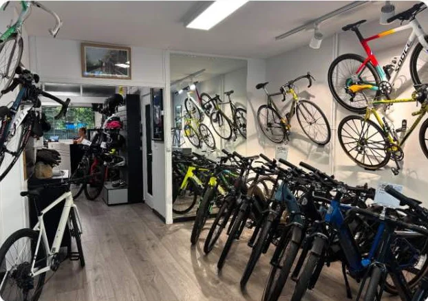

Service réglage
Contrôle complet du vélo : serrages et réglages pour rouler en toute sécurité.
- Serrages contrôlés
- Freins et vitesses réglés
- Contrôle de sécurité
CHF 109.-Réserver →

Accueil / Réparation
Atelier · Genève
Chez CycloGordo, nous réparons tous types de vélos, électriques ou mécaniques. L'atelier propose un service rapide, soigné et personnalisé : nous sommes formés pour diagnostiquer et entretenir votre vélo avec rigueur et passion.
Prenez rendez-vous en ligne ou passez directement au magasin pour une première évaluation. Nous examinons le vélo ensemble et vous proposons la solution la plus adaptée.
En ligne en quelques clics, par téléphone, ou directement au magasin.
On regarde le vélo avec vous, et on vous propose les travaux adaptés avant de commencer.
Les prix s'entendent en francs suisses. Pour une demande particulière, appelez-nous ou passez au magasin.
Contrôle complet du vélo : serrages et réglages pour rouler en toute sécurité.
Le plus demandé
Le service réglage, plus l'entretien complet de la transmission : chaîne, cassette et plateau si besoin.
Service complet avec nettoyage en profondeur, pour retrouver un vélo comme neuf, par exemple après une course.
Offert à l'achat d'un vélo neuf : un contrôle gratuit après la période de rodage.
Changement de la chambre à air, et du pneu si nécessaire.
Votre vélo emballé dans un carton avec une protection complète, pour un transport en avion par exemple.